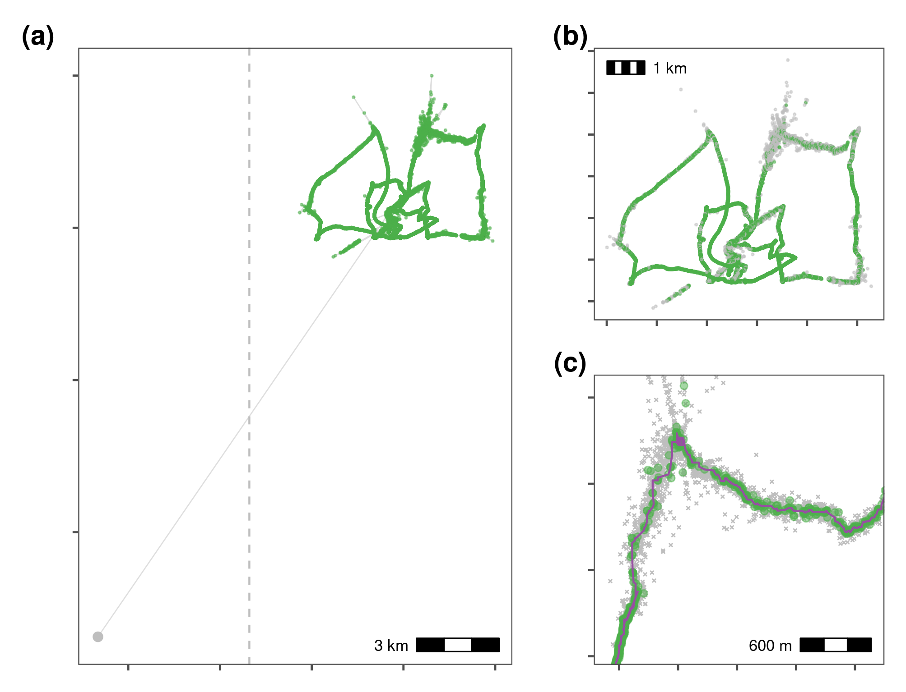
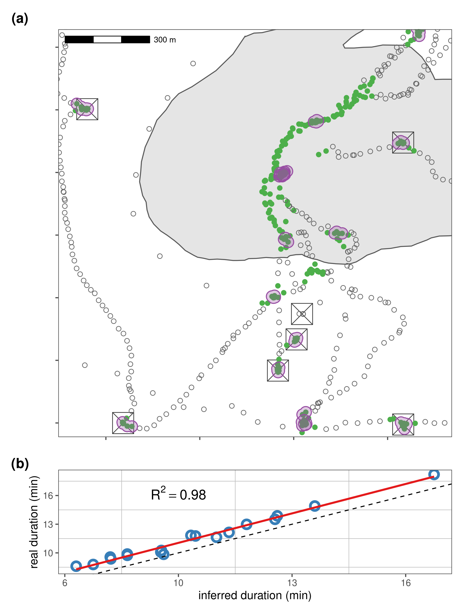

Section 6 Processing calibration data
6.1 Prepare libraries
6.2 Preliminary visualisation
6.3 Filter by bounding box
Save an unprocessed copy.
Filter by a bounding box.
6.4 Filter trajectories
6.4.1 Handle time
Time in ATLAS tracking is counted in milliseconds and is represented by a 64-bit integer (type long), which is not natively supported in R; it will instead be converted to a numeric, or double.
This is not what is intended, but it works. The bit64 package can help handle 64-bit integers if you want to keep to intended type.
A further issue is that 64-bit integers (whether represented as bit64 or double) do not yield meaninful results when you try to convert them to a date-time object, such as of the class POSIXct.
This is because as.POSIXct fails when trying to work with 64-bit integers (it cannot interpret this type), and returns a date many thousands of years in the future (approx. 52,000 CE) if the time column is converted to numeric.
There are two possible solutions. The parsimonious one is to convert the 64-bit number to a 32-bit short integer (dividing by 1000), or to use the nanotime package.
The conversion method loses an imperceptible amount of precision. The nanotime requires installing another package. The first method is shown here.
In the spirit of not destroying data, we create a second lower-case column called time.
6.4.2 Add speed and turning angle
6.4.3 Get 95th percentile of speed and angle
6.4.4 Plot to see speeds

6.4.5 Filter on speed
Here we use a speed threshold of 15 m/s, the fastest known boat speed.
# make a copy
data_unproc <- copy(data)
# remove speed outliers
data <- atl_filter_covariates(data = data,
filters = c("(speed_in < 15 & speed_out < 15)"))
# recalculate speed and angle
data[, `:=` (speed_in = atl_get_speed(data,
x = "x",
y = "y",
time = "time"),
speed_out = atl_get_speed(data, type = "out"))]
# add turning angle
data[, angle := atl_turning_angle(data = data)]6.5 Smoothing the trajectory
# apply a 5 point median smooth, first make a copy
data_unproc <- copy(data)
# now apply the smooth
data <- atl_median_smooth(data = data,
x = "x", y = "y", time = "time",
moving_window = 5)6.5.1 Plot pre-processing steps

6.6 Making residence patches
6.6.1 Prepare data
An indicator of individual residence at or near a position can be useful when attempting to identify residence patches. Positions can be filtered on a metric such as residence time (see Bracis et al. 2018).
In this dataset, residence positions are marked in the tID column as beginning with WP. These can be extracted and converted into residence patches.
6.6.2 Calculate residence time
Subset for boating segments: 2020-08-24 11:13:00 – 2020-08-24 12:36:11.
# load recurse
library(recurse)
data_recurse <- data_unproc[, list(x, y, time, TAG, UTCtime)]
# thin the data
data_recurse <- atl_thin_data(data = data_recurse,
interval = 30, id_columns = "TAG",
method = "resample")
# get 4 column data
data_recurse <- data_recurse[, list(x, y, time, TAG)]
# get recurse data for a 10m radius
recurse_stats <- getRecursions(data_recurse,
radius = 50, timeunits = "mins")
# assign to recurse data
data_recurse[, res_time := recurse_stats$residenceTime]
# save recurse data
fwrite(data_recurse, file = "data/data_calib_recurse.csv")Read in the data.
Subset waypoint data.
6.6.3 Plot residence time
6.6.4 Run residence patch method
# assign id as tag
data_recurse[, id := as.character(TAG)]
# subset on 5 minute residence time
data_recurse_subset <- data_recurse[res_time >= 5, ]
# on known residence points
patch_res_known <- atl_res_patch(data_recurse_subset,
buffer_radius = 10,
lim_spat_indep = 100,
lim_time_indep = 5,
min_fixes = 3)6.6.5 Get spatial and summary objects
6.6.6 Get waypoint centroids
# get centroid
data_res_summary <- data_res[, list(x_median = median(x),
y_median = median(y),
t_median = median(time)),
by = "tID"]
# now get times 10 mins before and after
data_res_summary[, `:=`(t_min = t_median - (10 * 60),
t_max = t_median + (10 * 60))]
# make a list of positions 10min before and after
wp_data <- mapply(function(l, u, mx, my) {
tmp_data <- data_unproc[inrange(time, l, u)]
tmp_data[, distance := sqrt((mx - x)^2 + (my - y)^2)]
# keep within 50
tmp_data <- tmp_data[distance <= 50, ]
# get duration
return(diff(range(tmp_data$time)))
}, data_res_summary$t_min, data_res_summary$t_max,
data_res_summary$x_median, data_res_summary$y_median,
SIMPLIFY = FALSE)6.7 Compare patch metrics
6.7.1 Compare known patches
# get known patch summary
data_res <- data_unproc[stringi::stri_detect(tID, regex = "(WP)"), ]
# get waypoint summary
patch_summary_real <- data_res[, list(nfixes_real = .N,
x_median = round(median(x), digits = -2),
y_median = round(median(y), digits = -2)),
by = "tID"]
# add real duration
patch_summary_real[, duration_real := unlist(wp_data)]
# round median coordinate for inferred patches
patch_summary_inferred <-
patch_summary_data[,
c("x_median", "y_median",
"nfixes", "duration", "patch")
][, `:=`(x_median = round(x_median, digits = -2),
y_median = round(y_median, digits = -2))]
# join with respatch summary
patch_summary_compare <-
merge(patch_summary_real,
patch_summary_inferred,
on = c("x_median", "y_median"),
all.x = TRUE, all.y = TRUE)
patch_summary_compare[!is.na(tID)]
# drop nas
patch_summary_compare <- na.omit(patch_summary_compare)
# drop patch around WP080
patch_summary_compare <- patch_summary_compare[tID != "WP080", ]12 patches are identified where there are no waypoints, while 2 waypoints are not identified as patches. These waypoints consisted of 6 and 15 (WP098 and WP092) positions respectively, and were lost when the data were aggregated to 30 second intervals.
6.7.2 Plot durations comparisons
6.7.3 Join patch map and duration comparison figure
